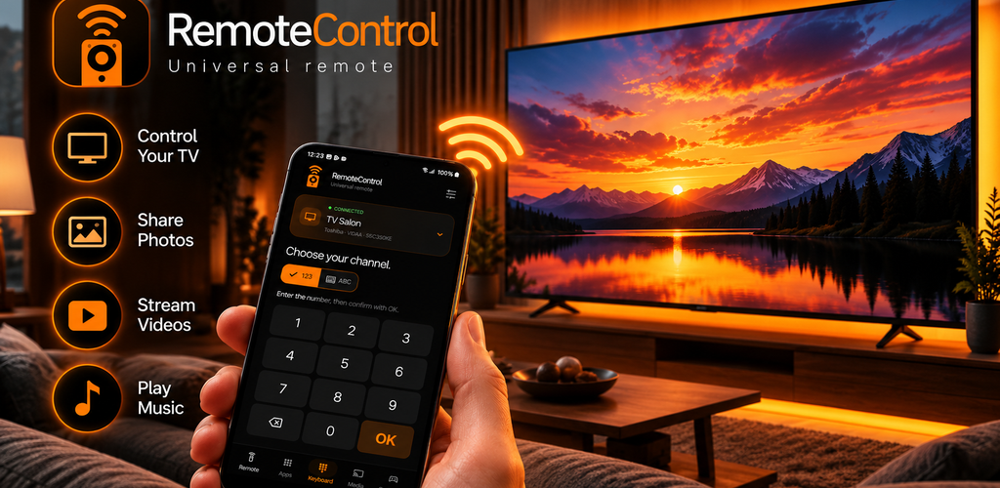

Prenez les commandes.
Contrôlez votre télévision depuis votre téléphone.
● VOTRE NOUVELLE TÉLÉCOMMANDE
La télécommande fait place à votre téléphone.
TV, photos, vidéos, musique : découvrez RemoteControl.

UNE APP. PLUS DE POSSIBILITÉS.
Changez de programme.
Partagez un souvenir.
Donnez le ton à votre soirée.
Contrôlez votre télévision depuis votre téléphone.
Partagez vos photos sur votre télévision et revivez vos souvenirs ensemble.
Diffusez vos vidéos et profitez du grand écran.
Faites place à la musique pour accompagner vos moments à la maison.
REMOTECONTROL
Retrouvez l’univers RemoteControl et les prochaines informations sur l’application.
Suivre le créateur sur GitHub Le lien de téléchargement de l’application sera ajouté ici.